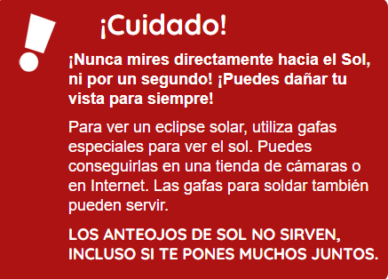

Los Eclipses
¿Que son? ¿Como los podemos ver? ¿Cuando los podemos ver? !Conoce esto y mas aqui¡
¿Que son los Eclipses?
Un eclipse se produce cuando un planeta o una luna se interpone en el camino de la luz del sol. Aquí en la Tierra, podemos experimentar dos clases de eclipses: eclipses solares y eclipses lunares. ¡Pero! ¿Cuál es la diferencia?
Eclipse Solar
Un Eclipse solar se produce cuando la luna se interpone en el camino de la luz del sol y proyecta su sombra en la Tierra. Eso significa que durante el día, la luna se mueve por delante del sol y se pone oscuro. ¿No es extraño que se ponga todo oscuro en pleno día? Este eclipse total se produce aproximadamente cada año y medio en algún lugar de la Tierra. Un eclipse parcial, cuando la luna no recubre por completo al sol, se produce al menos dos veces por año, en algún lugar de la Tierra.

Pero no todos podemos ver todos los eclipses solares. Tener la oportunidad de contemplar un eclipse total de sol no es frecuente. La sombra de la luna sobre la Tierra no es muy grande, por eso se puede ver desde unos pocos lugares de la Tierra. Tienes que estar en el lado soleado del planeta cuando este sucede. También tienes que estar en la trayectoria de la sombra lunar. En promedio, se puede ver un eclipse solar desde un mismo lugar de la Tierra solo durante unos minutos, cada 375 años aproximadamente.
Eclipse Lunar
Durante un eclipse lunar, la Tierra impide que la luz del sol llegue hasta la luna. Eso quiere decir que a la noche, la luna llena desaparece por completo, a medida que la sombra de la Tierra la cubre. La luna también puede parecer de un color rojizo, debido a que la atmósfera terrestre absorbe los demás colores mientras se dobla algo de luz solar hacia la luna. Los atardeceres obtienen su color rojo y anaranjado debido a la forma en la que la luz del sol se dobla cuando atraviesa la atmósfera y absorbe otros colores. Durante un eclipse total de luna, el brillo de la luna proviene de todos los amaneceres y puestas de sol que se producen en la Tierra.
¿Por qué no tenemos un eclipse lunar todos los meses?
Seguramente te estarás preguntando por qué es que no tenemos un eclipse lunar todos los meses ya que la luna orbita la Tierra. Es cierto que la luna da vueltas alrededor de la Tierra todos los meses, pero no siempre se interpone en la sombra de la Tierra. La trayectoria lunar alrededor de la Tierra está inclinada en comparación con la órbita de la Tierra alrededor del sol. La luna puede estar detrás de la Tierra e incluso así recibir luz solar.
